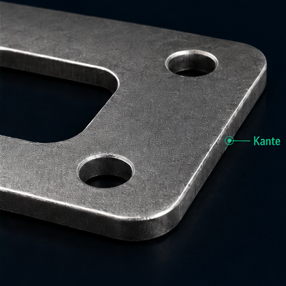
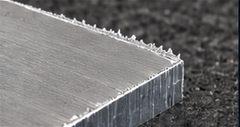

Manuelle Übertragung
Anfrage- und Angebotsprozesse bleiben schwer automatisierbar, obwohl viele Informationen bereits existieren.
Automatisierbarer RFQ-Kontext für STEP-Dateien
Warum werden Fertigungsdaten noch abgetippt, wenn sie mit der STEP-Datei reisen können? STEP-Q strukturiert Material, Menge, Prozessannahmen und weitere RFQ-Metadaten so, dass Menschen und Systeme dieselben Anfragegrundlagen verstehen.
Warum STEP-Q?
STEP ist ein etablierter Standard für CAD-Geometrie und produktbezogene Daten. STEP-Q ergänzt diesen Austausch um eine kleine, dokumentierte RFQ-Metadatenschicht: Material, Fertigungsabsicht, Mengen, Oberflächen, Toleranzen, Prüfanforderungen und weitere Informationen, die für Kalkulation und technische Übergabe relevant sind.
Anfrage- und Angebotsprozesse bleiben schwer automatisierbar, obwohl viele Informationen bereits existieren.
Konstruktion, Einkauf, Fertigung und externe Partner klären Details erneut, statt Daten direkt zu nutzen.
CAD, Kalkulation, Plattformformulare und Fertigungssysteme arbeiten mit getrennten Datenlogiken.
Technische Merkmale werden unterschiedlich interpretiert und Angebotsannahmen bleiben schwer nachvollziehbar.
Was wird strukturiert?
STEP-Q bildet Informationen ab, die heute häufig manuell interpretiert oder aus Begleitdokumenten zusammengesucht werden müssen.
Neben vielen Methoden zum Entgraten von Teilen ist das Nassschliffverfahren sehr gängig. Hierbei muss immer entschieden werden, ob nur eine oder beide Seiten entgratet werden sollen. Das Fehlen dieser Angabe führt zu unnötigen Rückfragen. STEP-Q kann diese Angabe maschinenlesbar mitliefern.

| Bearbeitung | Entgraten |
|---|---|
| Optionen | Rückseitig / Zweiseitig |
| Ziel | Gratfreie Kanten |
| Geeignet für | Laserteile und Blechteile |
| Kantenwirkung | Kanten werden gratfrei, bleiben aber meist scharfkantig. |
| Oberflächenhinweis | Die Oberfläche kann sich durch maschinelles Entgraten verändern. |
| Auswahl relevant | Ja, für Angebot und Fertigung |
Entgraten entfernt erhöhte Kanten (Grat), die durch Laserschneiden entstehen können.
Die Kanten werden gratfrei, bleiben jedoch meist scharfkantig.
Durch maschinelles Entgraten kann sich die Oberfläche verändern.
Für Angebot und Fertigung ist die Wahl der Entgratart relevant.
Vorderseite
(nicht entgratet)
Vorderseite
(entgratet)
t = Materialstärke

Entgraten entfernt erhöhte Kanten (Grat) und macht sie gratfrei, jedoch meist scharfkantig.
Wie es funktioniert
CAD, PDM, ERP oder Plattformen stellen vorhandene Informationen wie Material, Menge oder Prozesskontext bereit.
Anwender können Werte kontrollieren, fehlende Angaben ergänzen und die Übergabe bewusst freigeben.
STEP-Q-Metadaten reisen strukturiert mit der STEP-Datei oder über ein dokumentiertes Sidecar-Profil.
Importer, Portale und Kalkulationssysteme können diese Daten mappen und zu ihren Zwecken weiterverarbeiten.
Für wen?
STEP-Q soll genau dort helfen, wo CAD-Informationen in Anfrage, Angebot, Arbeitsvorbereitung oder Softwarelogik erneut interpretiert werden. Entwicklungspartner helfen, diese Übergänge mit echten Daten belastbar zu machen.
Fertigungsabsichten strukturiert mitgeben, statt sie später in E-Mails, Zeichnungen oder Formularen zu verlieren.
Rückfragen reduzieren, Angebotsannahmen nachvollziehbarer machen und relevante Felder schneller auswerten.
Anfrageformulare automatisch vorbelegen und unvollständige Datensätze gezielter sichtbar machen.
CAD-, CAM-, ERP- und PDM-Schnittstellen um einen klaren RFQ-Kontext für downstream Prozesse erweitern.
Tooling Preview
Für den ersten Website-Entwurf zeigen wir die Richtung: STEP-Datei auswählen, Metadaten prüfen, STEP-Q-konform schreiben und in Zielsysteme übergeben. Echte Upload-, Viewer- oder Verarbeitungsfunktionen werden separat bereitgestellt.
holydraft
holydraft initiiert STEP-Q und entwickelt das Ökosystem dahinter: Spezifikation, Anwendungsfälle, Importer-/Exporter-Konzepte und technische Beratung für CAD-, PDM-, ERP- und Plattformintegrationen.
Viele Übergaben funktionieren heute nur, weil Menschen technische Informationen händisch sortieren, prüfen und übertragen.
STEP-Q soll genau dort strukturieren, wo Daten bereits vorhanden sind, aber noch nicht sauber in Folgeprozessen ankommen.
Das Ziel ist weniger Reibung zwischen Idee, Konstruktion, Anfrage, Kalkulation und Fertigung.
FAQ
AP242 ist stark und umfassend für Produktdaten. STEP-Q ersetzt AP242 nicht, sondern ergänzt STEP-basierte Prozesse gezielt um praxisnahe RFQ-Metadaten: Fertigungsabsicht, anfragerelevante Informationen und Felder für Kalkulation, Einkauf, Arbeitsvorbereitung und Plattformprozesse.
STEP-Q soll Materialien nicht automatisch erraten. Stattdessen wird eine definierte Bezeichnung bewusst zugeordnet. Interne Materiallogiken können über Mapping-Tabellen oder Übersetzungsdatenbanken mit STEP-Q-konformen Daten verbunden werden.
Nein. STEP-Q macht bereitgestellte Informationen strukturierter und nachvollziehbarer, ersetzt aber keine fachliche Prüfung. Die Verantwortung für richtige, vollständige und freigegebene Daten bleibt bei Ersteller, Exporter, Importeur und den jeweiligen Prozessen.
Viele STEP-Q-relevante Informationen existieren bereits im CAD-Modell, in Parametern oder internen Systemen. Ein Exporter kann sie auslesen, zur Prüfung anzeigen und strukturiert mitgeben. Dadurch sinken später Rückfragen, manuelle Übertragung und Fehlerwahrscheinlichkeit.
STEP-Q ist auf versionierte Weiterentwicklung ausgelegt. Neue Werte können ergänzt werden; Importer können über Versionen, Mapping- und Alias-Logiken nachvollziehen, nach welcher Spezifikation eine Datei erstellt wurde.
Nicht zwingend. Unterstützt ein Portal oder ein Anfrageprozess STEP-Q, können Felder wie Material, Menge, Verfahren, Oberfläche oder Fertigungsabsicht aus der Datei übernommen, geprüft und ergänzt werden.
STEP-Q kann mit Vollständigkeitsprofilen arbeiten. Ein Profil legt fest, welche Angaben für einen Anwendungsfall benötigt werden. Fehlende Pflichtinformationen können dann sichtbar gemacht oder als unvollständig markiert werden.
Verantwortung